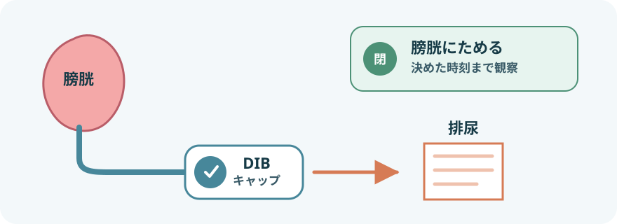
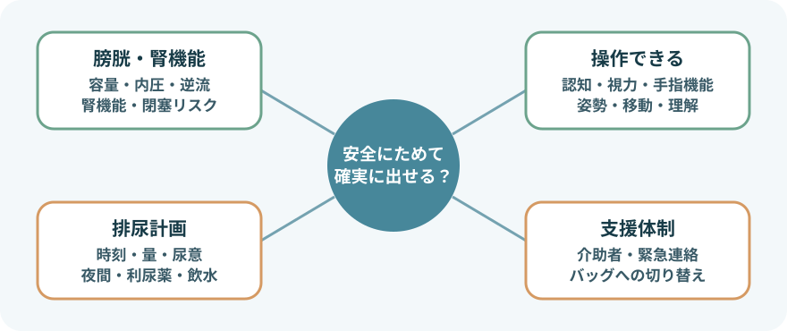
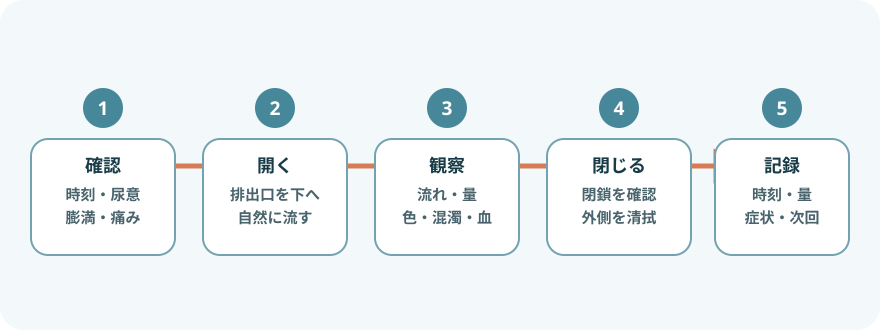

DIBキャップとは

- シリコーン製の尿道留置バルーンカテーテルの排尿ファネルへ接続する製品
- 磁力を利用したふたを片手で開閉し、トイレや容器へ排尿できる
- 専用アタッチメントを介して採尿バッグへ接続できる
- 外出・移動・入浴時の採尿バッグによる制約を軽くできる可能性がある
使えるかを先に評価する

- 膀胱容量・コンプライアンスが低い、膀胱内圧が高い、膀胱尿管逆流がある
- 腎機能障害、上部尿路障害、頻回な閉塞・結晶付着・血塊がある
- 尿意や膀胱充満感が乏しく、時計に沿った排尿も難しい
- 認知機能、手指機能、視力、姿勢保持のために開閉が安全に行えない
- 排尿介助を決めた時刻に行える支援体制がない
適している場合でも、尿意だけに任せず個別の排尿計画を作る。水分摂取、利尿薬、発熱、輸液、夜間多尿で尿のたまる速さは変わる。
使用前の確認
- 患者：尿意、下腹部膨満・疼痛、発熱、悪寒、側腹部痛、血尿、尿漏れ
- 計画：最終排尿時刻・量、次回排尿時刻、夜間バッグの使用、介助者
- カテーテル：固定、牽引、屈曲、亀裂、接続部、尿道口周囲の皮膚
- キャップ：製品名・型、確実な接続、ふたの開閉、異物、白い結晶、汚染、破損
- 磁石：MRI予定、植込み型医療機器、磁気の影響を受ける機器・カード類
磁石を使用するDIBキャップはMRI室へ持ち込まない。植込み型医療機器との距離や対応は、両方の製品説明書と医療者の指示を確認する。
排尿の手順

- 時刻と症状を確認する
最終排尿時刻、尿意、下腹部膨満・疼痛、発熱や気分不良を確認する。予定より遅れている場合は理由も把握する。
- 環境と容器を整える
トイレまたは患者専用の清潔な計量容器を準備する。衣服や床への飛散を防ぎ、カテーテルを引っ張らない姿勢にする。
- 手指衛生を行う
医療者は標準予防策に従って手袋を使用する。キャップの排出口を指、便器、容器へ接触させない。
- 排出口を下へ向けて開く
製品の開閉部を正しく操作し、尿を自然に流す。下腹部を強く押したり、カテーテルをしごいたりしない。
- 流れと尿を観察する
流出の開始、勢い、途絶、量、色、混濁、血液、沈渣、においを確認する。流れないときに器具を差し込まない。
- 閉鎖・清拭する
流出終了後にふたを確実に閉じる。外側の水分や汚れを製品指示に沿って清浄綿などで拭き、磁石部に異物を残さない。
- 再評価して記録する
下腹部症状、尿漏れ、接続、次回時刻を確認し、排尿時刻・量・性状・症状・介助内容を記録する。
夜間バッグ・採尿バッグへつなぐとき
- DIBキャップ専用アタッチメントを使い、キャップと採尿バッグへ十分に差し込む
- 接続前後に手指衛生を行い、接続部へ触れない。不用意な着脱を減らす
- バッグは膀胱より低く、床へ置かず、チューブの屈曲・圧迫・たるみをなくす
- キャップが開放され、膀胱からバッグまで尿が流れる状態を確認する
- 朝にバッグを外してキャップ管理へ戻す方法は、使用製品と療養計画どおりに行う
異常時の対応
- 尿が出ない：キャップの開放、屈曲・圧迫、接続、膀胱部症状を確認。強い膨満や痛みがあれば直ちに報告する
- 尿漏れ：ふたの閉鎖、異物・結晶、接続の浅さ、破損を確認。尿道周囲からの漏れは閉塞や膀胱けいれんも考える
- 血尿・血塊：量と色、カテーテル牽引、疼痛、流出を確認し、閉塞する前に報告する
- 発熱・悪寒・側腹部痛・意識変化：尿路感染や全身感染を疑い、バイタルサインと尿所見を添えて報告する
- 外れた・床へ落ちた・破損した：そのまま戻さず、清潔に保護して製品・施設手順で交換を依頼する
- 予定時刻に排尿できない：尿量増加による過伸展を防ぐため、代替の排尿方法と支援者を早めに確保する
- キャップ内部へ綿棒や器具を差し込む
- カテーテルをしごく、洗浄する、交換する
- 尿が出ないまま長時間待つ
- 磁石部の破損や閉鎖不良がある製品を使い続ける
類似する製品・方法
DIBキャップライト
磁石を使わない同社の開閉式キャップ。同名部品が自己導尿用カテーテルや採尿バッグの排出口にも使われている。接続対象・型番・交換方法を確認し、DIBキャップの代用品と決めつけない。
Flip-Flo™ Catheter Valve / Ugo Catheter Valve
レバーで開閉する海外のカテーテルバルブ。膀胱へ尿をためて任意に排出する目的は似ているが、構造、接続、使用期間、禁忌が異なる。日本での流通・承認・施設採用を確認してから使う。
レッグバッグ・採尿バッグ
尿を持続的に排出して袋へためる方法。活動性を保つ目的は共通するが、膀胱へ尿をためるDIBキャップとは排尿管理が違う。夜間のみバッグへ接続する計画もある。
単純なカテーテル栓・プラグ
排尿のたびに抜き差しする製品がある。自然脱落、尿の飛散、接触汚染、紛失への注意が必要。適合性が不明な栓を流用しない。
カテーテルバルブが採尿バッグより尿路感染を減らすかは、現在も十分な根拠がない。患者の希望や生活上の利点と、膀胱・腎機能、安全に操作できる条件を分けて評価する。
交換・日常管理
- メーカーはDIBキャップを1か月以内、またはカテーテル交換時に新しいものへ交換するよう案内している
- 使用期間内でも、閉鎖不良、漏れ、破損、著しい汚染・結晶付着、接続不良があれば交換を相談する
- キャップやアタッチメントの再使用・洗浄方法は、製品説明書にない方法を追加しない
- 留置カテーテル自体の必要性は定期的に見直し、不要なら早期抜去を検討する
報告・記録
- DIBキャップの種類、装着・交換日、カテーテルの種類と交換日
- 使用理由、選択時の膀胱・腎機能、操作能力、支援体制
- 排尿計画、時刻、量、尿性状、尿意・下腹部症状、尿漏れ
- 夜間バッグとアタッチメントの使用、接続状態、排液量
- 異常、報告先、対応、再評価、患者・介助者へ説明した内容
出典
- 株式会社ディヴインターナショナル「DIBキャップ」
- 株式会社ディヴインターナショナル「DIBキャップ リーフレット」2025
- 株式会社ディヴインターナショナル「DIBキャップ Q&A」
- 株式会社ディヴインターナショナル「採尿バッグ関連」
- NICE「Urinary incontinence in neurological disease：Catheter valves」
- CDC「Summary of Recommendations：CAUTI Prevention Guideline」
- EAUN「Indwelling catheterisation in adults」2024
- BD「Flip-Flo™ Catheter Valve」
- Optimum Medical「Ugo Catheter Valve」